Descubriremos los fundamentos del machine learning para convertirse en un cientifico del machine learning con python. Exploraremos el aprendizaje supervisado, no supervisado y profundo.
Aprendizaje supervizado con Scikit-learn
En este capítulo, se te presentarán los problemas de clasificación y aprenderás a resolverlos mediante técnicas de aprendizaje supervizado. Aprenderás a dividir los datos en conjuntos de entrenamiento y de prueba, ajustar un modelo, hacer predicciones y evaluar la precesión. Descubriras la relación entre la complejidad del modelo y el rendimiento, aplicando lo que aprendas a conjunto de datos de rotación, donde clasificarás el estado de rotación de los clientes de una empresa de telecomunicaciones.
Machine Learning con Scikit-learn
Machine Learning: Es el proceso por el que los ordenadores aprenden a tomar decisiones a partir de datos sin ser programados previamente para ello. Por ejemplo:
Aprender a predecir si un correo electronico es spam o no, en relación a su contenido o remitente.
Aprender a agrupar los libros en diferentes categorías en función de las palabras que contienen y luego asignar cualquier libro nuevo a uno de los grupos existentes.
Aprendizaje no supervizado: Es el proceso de descubrir patrones y estructuras ocultos a partir de datos no etiquetados. Por ejemplo:
Una empresa puede querer agrupar a sus clientes en distintas categorías en función de sus hábitos de compra sin saber de antemano cuales son dichas categorías. Esto se conoce como agrupación, una rama del aprendizaje no supervisado.
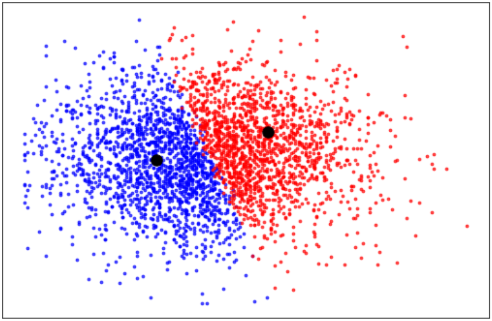
Aprendizaje supervisado: Es un tipo de machine learning en el que los valores que hay que predecir ya se conocen y se construye un modelo con el objetivo de predecir con exactitud valores de datos no vistos previamente.
El aprendizaje supervizado utiliza características para predecir el valor de una variable objetivo. Como predecir la posición de un jugador de baloncesto basandose en sus puntos por partido.
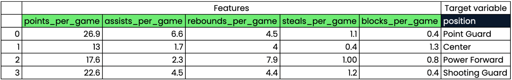
Machine Learning con Scikit-learn
Tipos de aprendizaje supervisados:
Clasificación: Se utiliza para predecir la etiqueta o categoría de una observación. Por ejemplo:
Predecir si una transacción bancaria es fraudulenta o no. Como en este caso tenemos dos resultados una transacción fraudulenta (1) o una transacción no fraudulenta (0) a esto se le conoce como clasificación binaria.
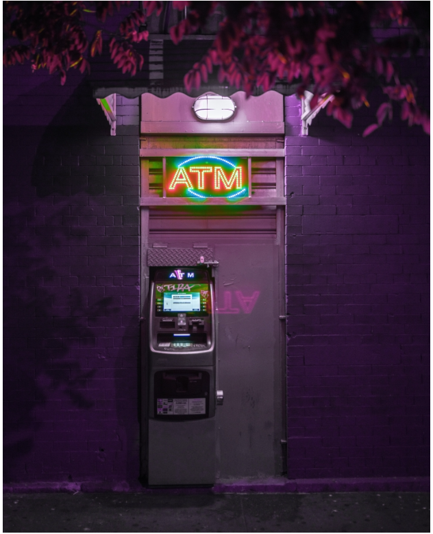
Regresión: Se utiliza para predecir valores continuos. Por ejemplo:
un modelo puede utilizar características como el número de habitaciones y el tamaño de una propiedad para predecir la variable objetivo, en este caso el precio de dicha propiedad.
Lo que nosotros aquí le estamos llamando características otros pueden llamarle variable predictoras o variable independiente. Además, lo que nosotros llamaos variable objetivo otros pueden llamarle variable dependiente o variable de respuesta.
Requisitos antes de llevas a cabo el aprendizaje supervisado:
Nuestros datos no deben tener valores missing
Deben estar en formato numérico y almacenados como dataframe o series de Pandas o matrices NumPy.
Para realizar lo mencionado previamente, primero se requiere un análisis exploratorio de los datos, para garantizar que esten en el formato correcto. En este paso son utiles varios metodos de pandas para la estadística descriptiva junto con las visualizaciones de datos adecuadas.
Scikit-learn syntax
Sigue la misma sintaxys para todos los modelos de aprendizaje supervisado lo que hace que el flujo de trabajo sea reproducible. Vamos a familiarizarnos con la sintaxys general del flujo de trabajo de scikit-learn.
from sklearn.module import Modelmodel = Model()model.fit(X,y)Predictions = model.predict(X_new)print(predictions)
El reto de la clasificación
Ya hemos aprendido que el aprendizaje supervisado hace uso de etiquetas. Veamos como podemos construir un modelo de clasificación o clasificador para predecir las etiquetas de datos no vistos. Consta de 4 pasos:
Primero, construimos el modelo.
El modelo aprende de los datos etiquetados que le proporcionamos.
Le pasamos datos no etiquetados como entrada.
El modelo predice las etiquetas para los datos no etiquetados que le proporcionamos.
Dado que el modelo aprende de los datos etiquetados a estos los llamos datos de entramiento o training data.
Construyamos nuestro primer modelo
K-Nearest Neighbors o K-vecino más cercano
Este modelo es muy utilizado para problemas de clasificación, la idea de K-NN es predecir la etiqueta de cualquier punto de datos fijandonos en la k, por ejemplo:
Los tres puntos de datos etiquetados más cercanos, y haciendo que voten sobre que etiqueta debería tener la observación no etiquetada.
KNN utiliza votación por mayoría, que hace predicciones basandose en que etiqueta tiene la mayoría de los vecinos más próximos.
Si utilizamos este gráfico de dispersión como ejemplo,
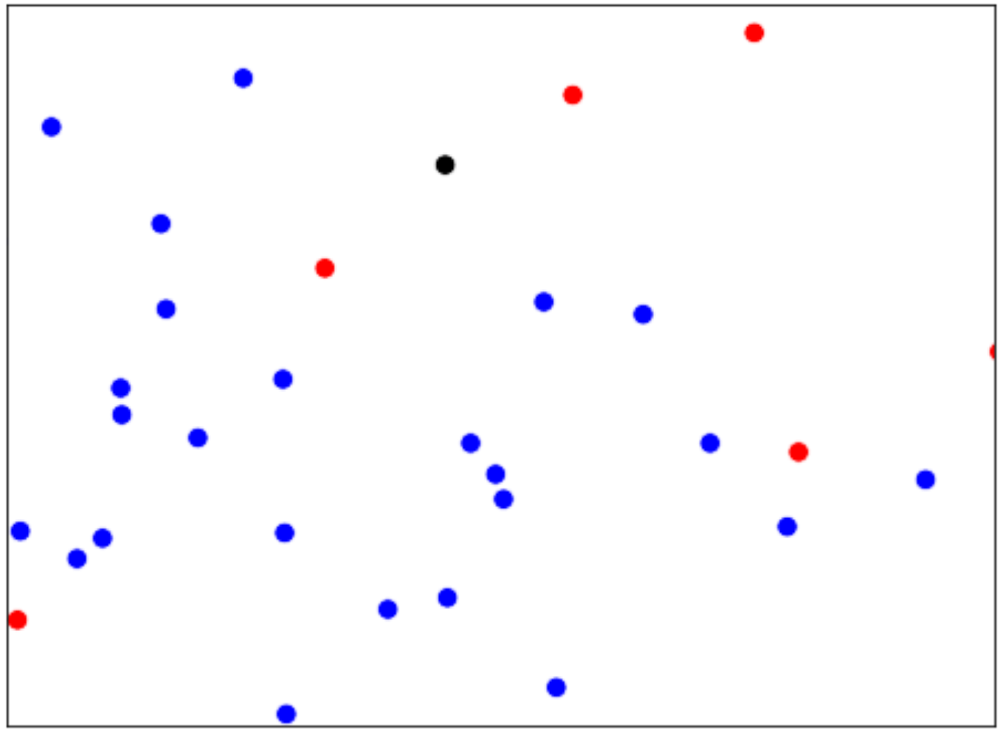
Como clasificamos la observación negra?
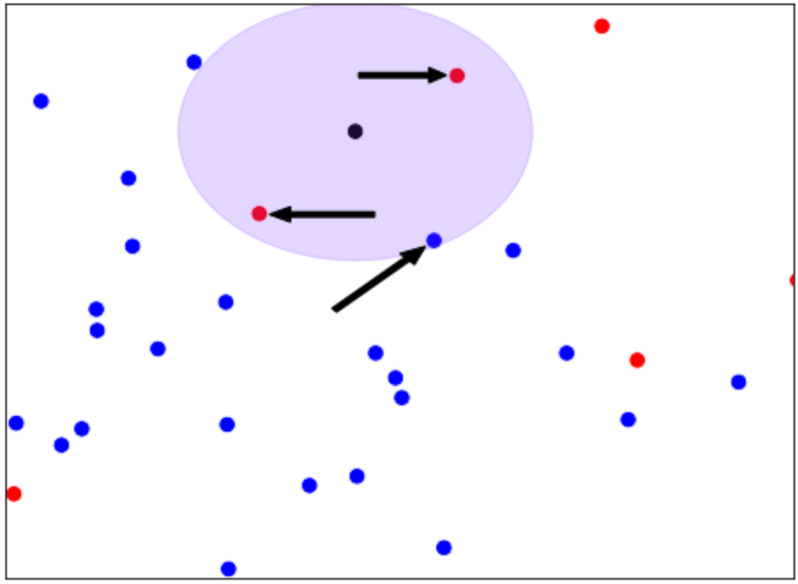
Si \(k=3\) la clasificariamos como roja, esto se debe a que dos de las observaciones más cercanas son rojas.
K-Nearest Neighbors
Si \(k=5\) la clasificariamos como azul.
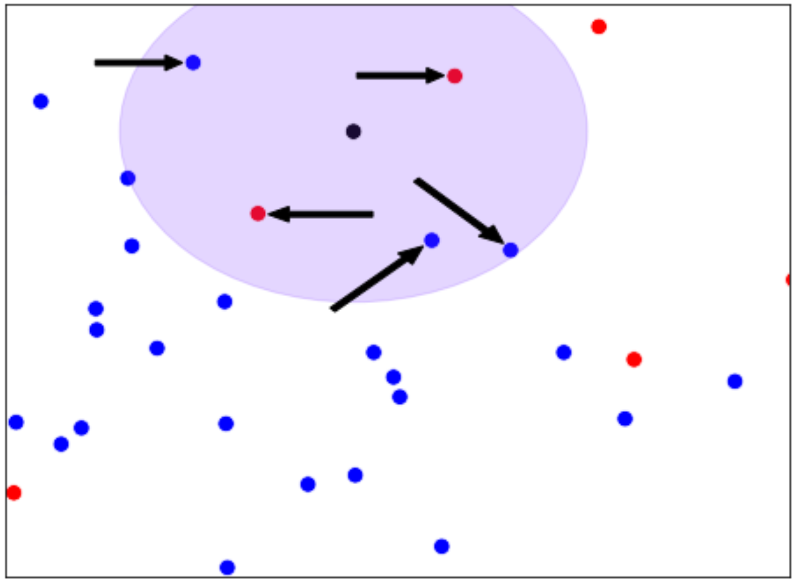
Para intuir mejor KNN veamos el siguiente grafico de dispersión, que muestra la tarifa nocturna total vs la tarifa total diaria de los clientes de una empresa de telecomunicaciones.
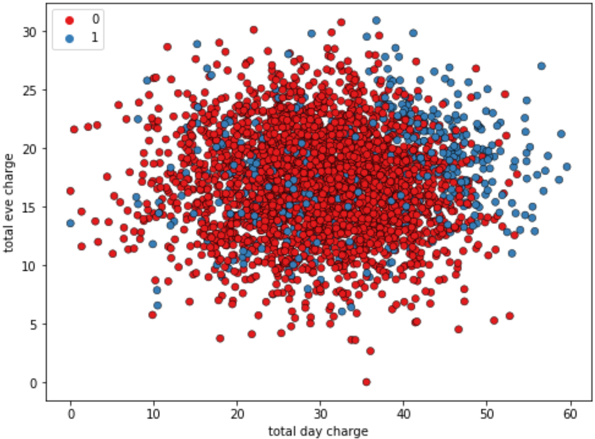
Las observaciones en azul corresponden a los clientes que se han dado de baja y las observaciones en rojo a los que no. En este caso hemos visualizado los resultados de un algoritmo KNN en el que el número de vecinos se fija en 15, KNN crea un limite de decisión para predecir si los clientes se darán de baja.
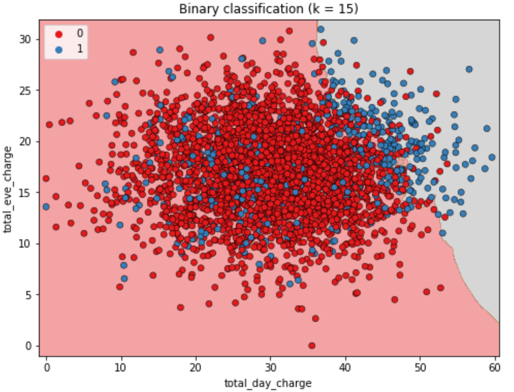
Se prevee que los clientes con la zona de fondo gris se darán de baja y los clientes en zona con fondo rojo no lo harán. Este límite se utilizaría para hacer predicciones sobre datos no vistos.
Ajuste de un modelo de clasificación usando Scikit-learn
import pandas as pd import numpy as npfrom sklearn.neighbors import KNeighborsClassifierchurn_df = pd.read_csv("telecom_churn_clean.csv")X = churn_df[["total_day_charge", "total_eve_charge"]].valuesy = churn_df[["churn"]].valuesprint(X.shape,y.shape)
(3333, 2) (3333, 1)
K-Nearest Neighbors
A contininuación instanciamos nuestro modelo KNeighborsClassifier:
knn = KNeighborsClassifier(n_neighbors =15)
Ahora podemos ajustar nuestro clasificador a nuestros datos etiquetados aplicando el método .fit() y pasandole dos argumentos (los valores de las características (X) y los valores objetivos (y)):
knn.fit(X,y)
KNeighborsClassifier(n_neighbors=15)
In a Jupyter environment, please rerun this cell to show the HTML representation or trust the notebook. On GitHub, the HTML representation is unable to render, please try loading this page with nbviewer.org.
Vemos que X_new tiene 3 filas (observaciones) y 2 columnas (características). Utilizamos el método .predict() del clasificador y le pasamos los datos no vistos como una matriz numpy que contiene características en columnas y observaciones en filas:
Ahora trataremos account_length y customer_service_calls como características porque la antiguedad de la cuenta indica fidelidad del cliente, y las llamadas frecuentes al servicio de atención al cliente pueden ser señal de insatisfacción, y ambos piueden ser buenos predictores de la rotación.
Como podemos notar instanciamos el modelo con 6 vecinos. Los resultados de las predicciones con estas nuevas características y los 6 vecinos son:
print('predicciones: {}'.format(y_pred))
predicciones: [0 1 0]
El modelo ha predicho los primeros y los terceros clientes no se darán de baja. Pero, cómo sabemos qué tan precisas son estas predicciones? Vamos a explorar como medir el rendimiento de un modelo en la próxima sección.
Rendimiento del Modelo
Ahora que podemos hacer predicciones usando un clasificador, pero, como sabemos si el modelo esta haciendo predicciones correctas?
En clasificación, la precisión es una métrica comúnmente utilizada.
Precisión o Accuracy: es el número de predicciones correctas divididas por el número total de observaciones.
Podríamos calcular la precisión de los datos utilizados para ajustar el clasificador. Sin embargo, como estos datos se utilizarón para entrenar el modelo, el rendimiento no será indicativo de los bien que pueda generalizar con datos no vistos, que es lo que nos interesa.
Es común dividir los datos en un conjunto de entrenamiento y un conjunto de prueba, ajustamo el modelo o clasificador utilizando el conjunto de entrenamiento y a continuación calculamos el accuracy del modelo en función de las etiquetas del conjunto de prueba.
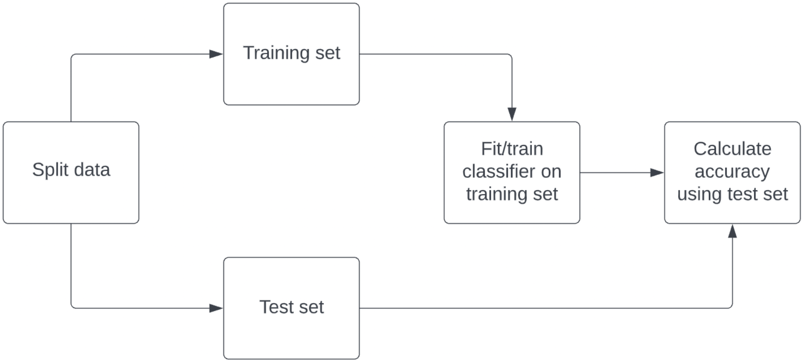
Para ello importamos train_test_split y le pasamos nuestras características y objetivos
normalmente utilizamos entre un 20% o 30% de nuestros datos como conjunto de prueba, al fijar el argumento test_size = 0.3 utilizamos el 30%, el argumento random_state = 21 establece una semilla para un generador de números aleatorios que divide los datos, utilizar el mismo número al repetir este paso nos permite reproducir la división exacta y nuestros resultados posteriores. Se recomienda garantizar que nuestra división refleje la proporción de etiquetas en nuestros datos, por tanto, si la rotación se produce en el 10% de las observaciones queremos que el 10% de las etiquetas de los conjuntos de entrenamiento y prueba representen la rotación, esto se consigue al establecer stratify = y.
train_test_split() devuelve 4 matrices los datos de entrenamiento, los datos de prueba, las etiquetas de entrenamiento y las etiquetas de pruebas (X_train, X_test, y_train, y_test).
Ahora, instanciamos un modelo KNN y lo ajustamos a los datos de entrenamiento. Para comprobar la precisión utilizamos el método .score()
Hablemos de como interpretar \(k\), recordemos que hemos hablado sobre los límites de decisión que son umbrales para determinar que etiqueta asigna un modelo a una observación.
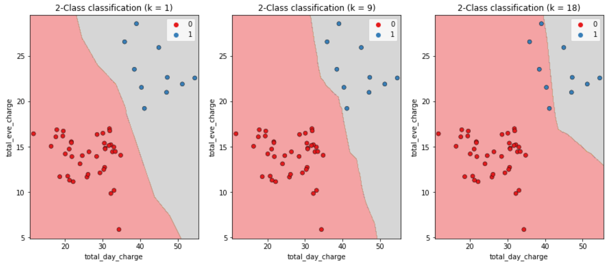
En la imagen, vemos que a medida que aumenta \(k\) el límite de decisión se ve menos afectado por las observaciones individuales, esto nos indica que es un modelo más simple.
Los modelos más simple tiene menos capacidad de detectar relaciones en el conjunto de datos, lo que se conoce como infraajuste.
En cambio, los modelos complejos, pueden ser sensibles al ruido de los datos de entrenamiento, en lugar de reflejar tendencias generales. Esto se conoce como sobreajuste.
También, podemos interpretar \(k\) mediante una curva de complejidad del modelo.
Con un modelo KNN podemos calcular la precisión en los conjuntos de entrenamiento y prueba, utilizado valores \(k-incrementales\). Y representar los resultados de forma gráfica, creamos diccionarios vacios para almacenar las precisiones de entramiento y prueba y una matriz que contiene un rango de valores \(k\), construyendo varios modelos que utilizan un número diferente de vecinos.
Luego, trazamos los valores de entrenamiento y de prueba:
import matplotlib.pyplot as pltplt.figure(figsize = (8,6))plt.title("KNN: Número variable de vecinos")plt.plot(neighbors, train_accuracies.values(), label ="Training Accuracy")plt.plot(neighbors, test_accuracies.values(), label ="Testing Accuracy")plt.legend()plt.xlabel("Numero de Vecinos")plt.ylabel("Accuracy")plt.show()
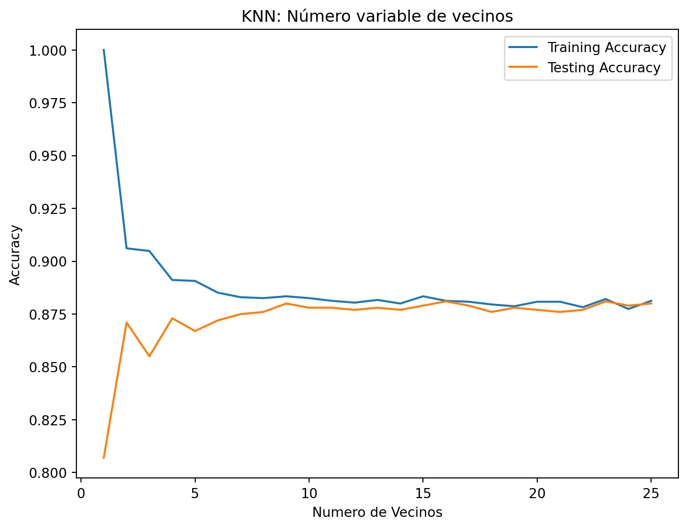
Notemos que a medida que \(k\) aumenta por encima de 15, observamos un infraajuste en el que el rendimiento se estanca tanto en los conjuntos de prueba como entrenamiento. De hecho, podemos notar que la máxima precisión de la prueba se produce cerca de los 13 vecinos.
Regresión
En este capítulo, te introduciras en la regresión y construirás modelos para predecir los valores de las ventas utilizando un conjunto de datos sobre gastos publicitarios. Aprenderás la mecanica de la regresión y las métricas de rendimiento más comunes, como \(R^2\) y error cuadrático medio. Realizarás la validación cruzada k-fold, y aplicarás la regularización a los modelos de regresión pra reducir el riesgo de sobreajuste.
Introducción a la regresión
En las tareas de regresión la variable objetivo suele tener valores continuos, como el PIB, el precio de una vivienda, etc. Para conceptualizar los problemas de regresión, utilicemos un conjunto de datos sobre la salud de las mujeres para predecir los niveles de glucosa en sangre.
import pandas as pddiabetes_df = pd.read_csv("diabetes_clean.csv")print(diabetes_df.head())
triceps: las mediciones de los pliegues cutaneos del triceps.
insulin: los niveles de insulina.
bmi: el indice de masa corporal.
age: la edad en años.
diabetes: estado diabetico. 1: indica diagnóstico y el 0: ausencia de diagnóstico.
Crear arreglos de características y objetivos
Recordemos que scikit-learn requiere características y valores objetivos en variables distintas \(X\) e \(y\). Para utilizar todas las características de nuestro conjunto de datos eliminamos nuestro objetivo.
X = diabetes_df.drop("glucose", axis =1).valuesy = diabetes_df["glucose"].valuesprint(type(X), type(y))
<class 'numpy.ndarray'> <class 'numpy.ndarray'>
Predicción de niveles de glucosa en sangre apartir de una única característica el bmi.
X_bmi = X[:, 4]print(y.shape, X_bmi.shape)
(768,) (768,)
Al comprobar la forma de \(X_{bmi}\) e \(y\) vemos que ambas son matrices unidimencionales, esto esta bien para \(y\). Pero nuestras características deben estar formateadas como una matriz bidimensional para que scikit-learn las acepte, para esto:
X_bmi = X_bmi.reshape(-1,1)print(X_bmi.shape)
(768, 1)
A continuación tracemos los niveles de glucosa en sangre en función del índice de masa corporal.
Plotting glucose vs bmi
import matplotlib.pyplot as pltplt.scatter(X_bmi, y)plt.ylabel("Glucosa en la sangre (mg/dl)")plt.xlabel("Indice de masa corporal")plt.show()
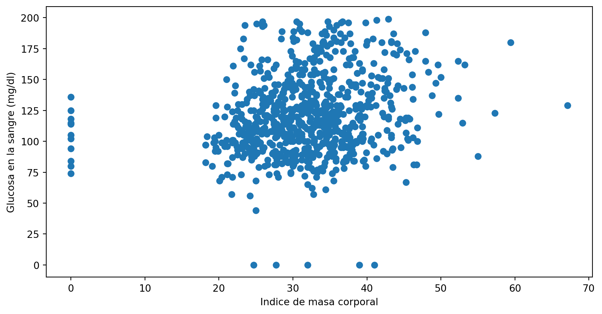
Podemos ver que en general a medida que aumenta el bmi también tienden aumentar los niveles de glucosa en sangre. Es el momento de ajustar un modelo de regresión a nuestros datos.
Fitting modelo de regresión lineal
Este modelo llamado regresión lineal ajusta una linea recta a nuestros datos. Lo veremos más a detalle posteriormente, pero antes veamos como ajustarla y como trazar predicciones.
from sklearn.linear_model import LinearRegressionreg = LinearRegression()reg.fit(X_bmi, y)predicciones = reg.predict(X_bmi)plt.scatter(X_bmi,y)plt.plot(X_bmi, predicciones, color ="red")plt.ylabel("Glucosa en la sangre (mg/dl)")plt.xlabel("Indice de masa corporal")plt.show()
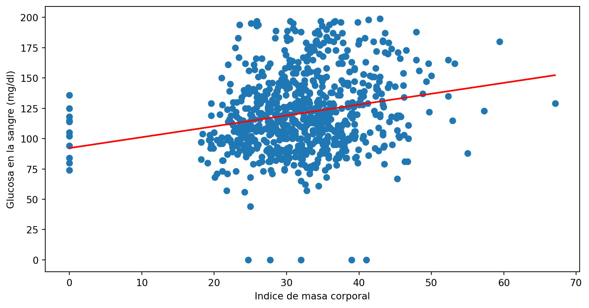
Conceptos Básicos de Regresión Lineal
Cómo funciona la regresión líneal?
Queremos ajustar una recta a los datos y en dos dimensiones esto toma la forma de
\[y = ax + b\]
El uso de una sola característica se conoce como regresión lineal simple, en la que \(y\) es la variable de respuesta, \(x\) es la característica y \(a,b\) son los parámetros del modelo, así mismo \(a,b\) también se denominan coeficientes del modelo o pendiente \((a)\) y coeficiente \((b)\).
Cómo elegimos con precisión valores para\(a\)y\(b\)?
Podemos definir una función de error (o función de pérdida o de coste) para cualquier recta dada,
y luego, elegir la recta que minímice esta función.
Error function = loss function = cost function
Visualicemos una función de loss o pérdida utilizando este gráfico de dispersión:
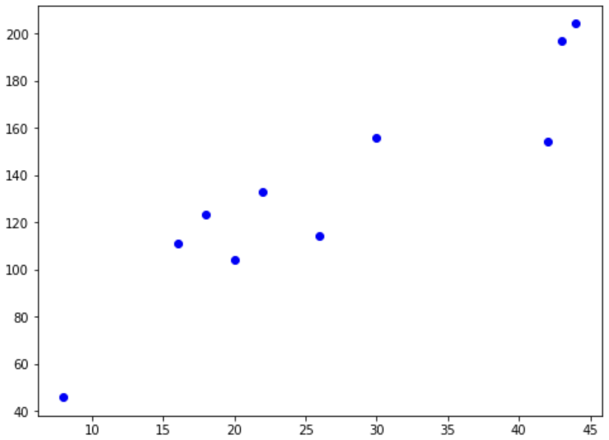
Queremos que la línea este lo más cerca posible de las observaciones
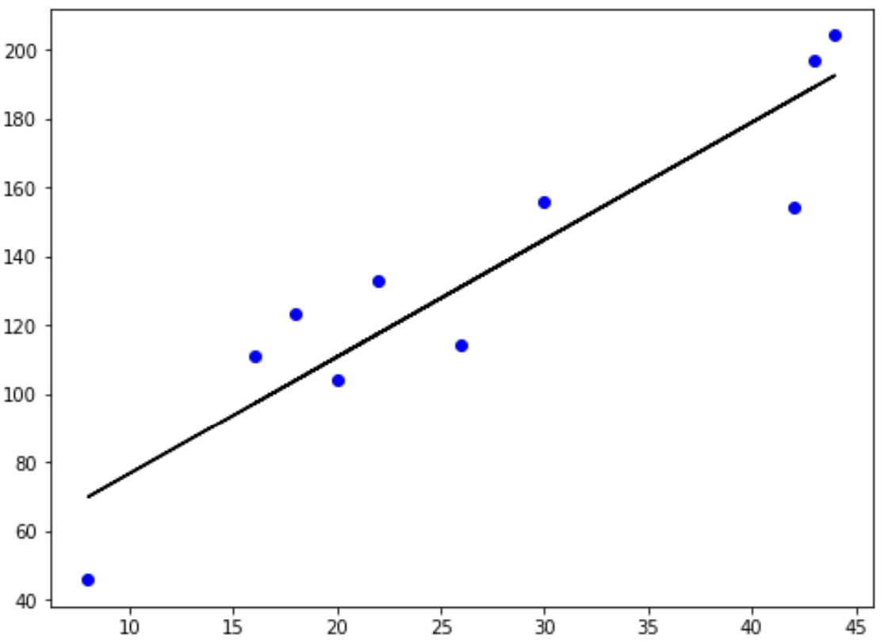
por tanto, queremos minímizar la distancia vertical entre el ajuste y los datos, entonces para cada observación calculamos la distancia vertical entre esta y la línea:
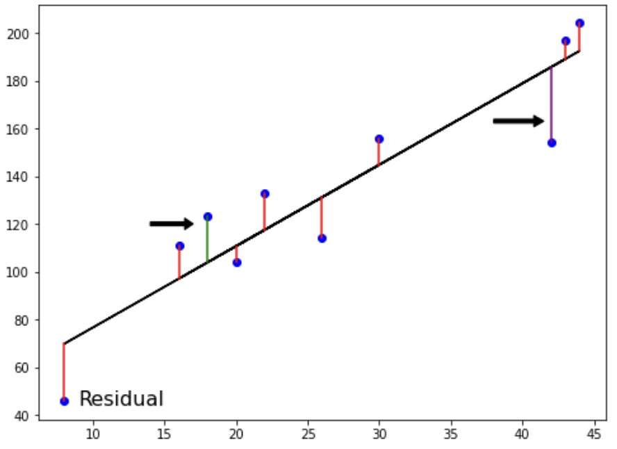
dicha distancia se denomina residuo. Podríamos intentar minímizar la suma de los residuos, pero entonces cada residuo positivo anularia cada residuo negativo. Para evitarlo elevamos al cuadrado los residuos:
Cuando tenemos dos características \(x_1,x_2\) y un objetivo \(y\) la recta adopta la forma:
\[
y = a_1x_1 + a_2x_2 + b
\]
Cuando se añaden más características se le conoce como regresión lineal múltiple.
\[
y = a_1x1 + a_2x_2 + . . . + a_nx_n +b
\]
Ajustar un modelo de regresión lineal múltiple significa especificar un coeficiente \(a_n\), para \(n\) número de características y \(b\).
Para los modelos de regresión lineal múltiple scikit-learn espera una variable cada uno para los valores de característica y objetivo.
Simulando modelo de regresión lineal múltiple
Vamos a realizar una regresión lineal para predecir los niveles de glucosa en sangre, utilizando todas las características del conjunto de datos de la diabetes.
from sklearn.model_selection import train_test_splitfrom sklearn.linear_model import LinearRegression# Dividimos los datos en Train y testX_train, X_test, y_train, y_test = train_test_split(X,y,test_size=0.3, random_state=42)# Instanciamos el modelo reg_all = LinearRegression()# Ajustamos el modelo en el conjunto de entrenamientoreg_all.fit(X_train, y_train)
LinearRegression()
In a Jupyter environment, please rerun this cell to show the HTML representation or trust the notebook. On GitHub, the HTML representation is unable to render, please try loading this page with nbviewer.org.
LinearRegression()
# Predecimos en el conjunto de prueba y_pred = reg_all.predict(X_test)
Ten en cuenta que la regresión lineal en scikit-learn realiza RSS.
\(R^2\): es la métrica por defecto de la regresión lineal, que cuntifica la cantidad de varianza de la variable objetivo que explican las características, los valores pueden ir de 0 a 1.
1: significa que las características explican completamente la variabnza del objetivo.
Aquí tienes dos gráficos que visualizan el \(R^2\) alto y bajo respectivamente.
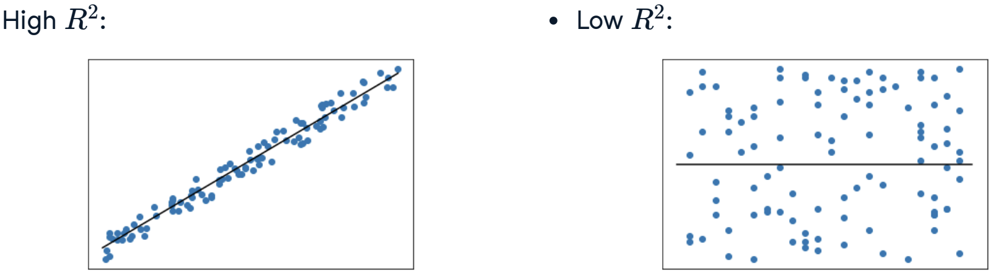
reg_all.score(X_test, y_test)
0.28280468810375115
Aquí las características solo explican al rededor del 28% de la varianza del nivel de glucosa en sangre.
Conceptos Básicos de Regresión Lineal
Error cuadrático medio o MSE
Otro forma de evaluar el rendimiento de un modelo de regresíon es tomar la medía de la suma residual de cuadrados.
El MSE se mide en unidades de nuestra variable objetivo al cuadrado. Por ejemplo, si un modelo predice un valor en dólares el MSE estará en dólares al cuadrado. Para convertirlo a dólares podemos tomar la raíz cuadrada \[RMSE = \sqrt{MSE}\]
Veamos el calculo con scikit-learn:
from sklearn.metrics import mean_squared_errorimport numpy as npmse = mean_squared_error(y_test, y_pred)rmse = np.sqrt(mse)rmse
26.341459582232265
Esto nos dice que el modelo tiene un error medio para los niveles de glucosa en sangre de unos 26 mg/dl.